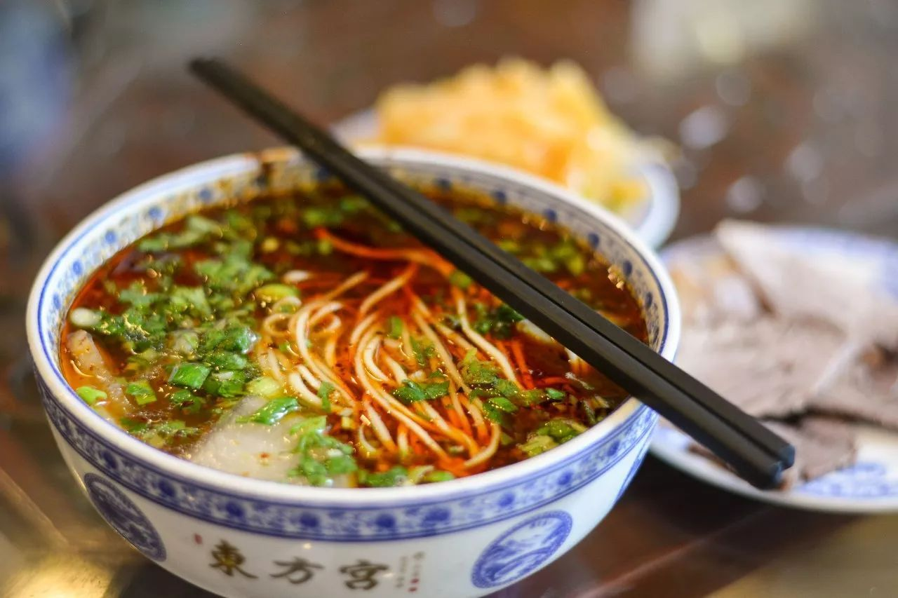
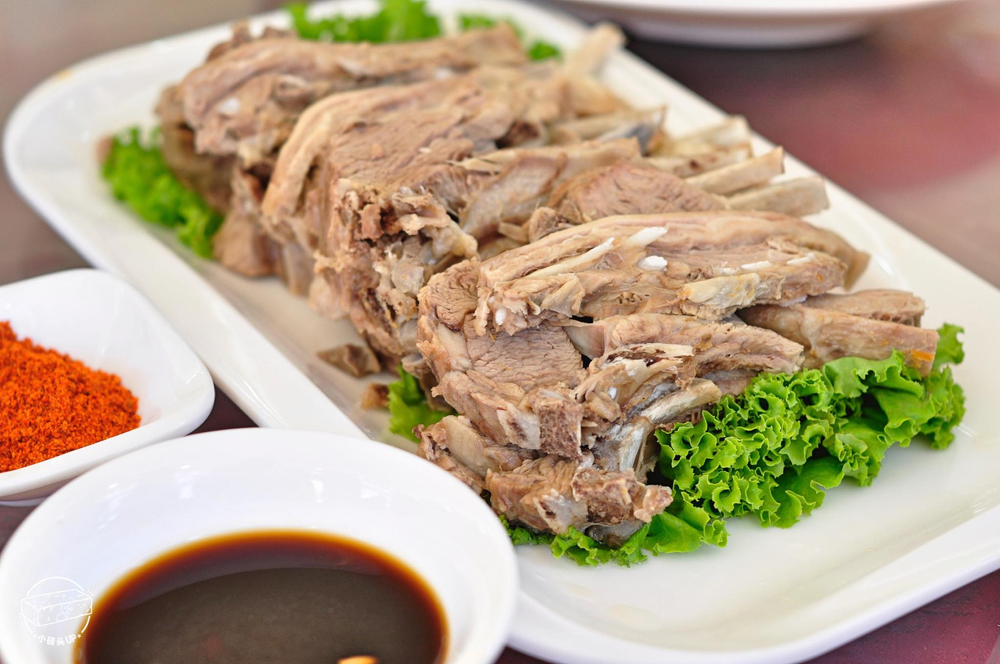
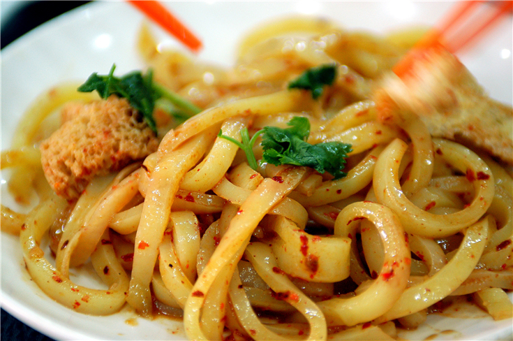
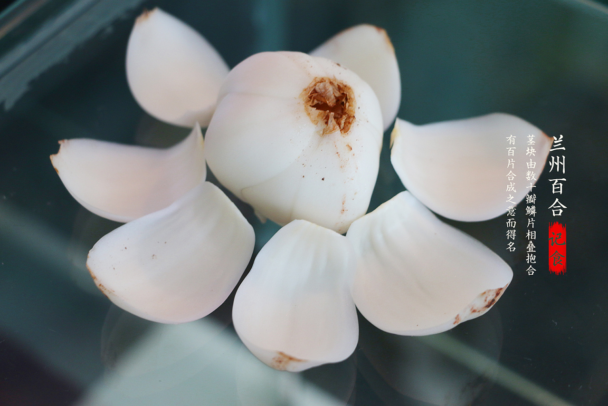
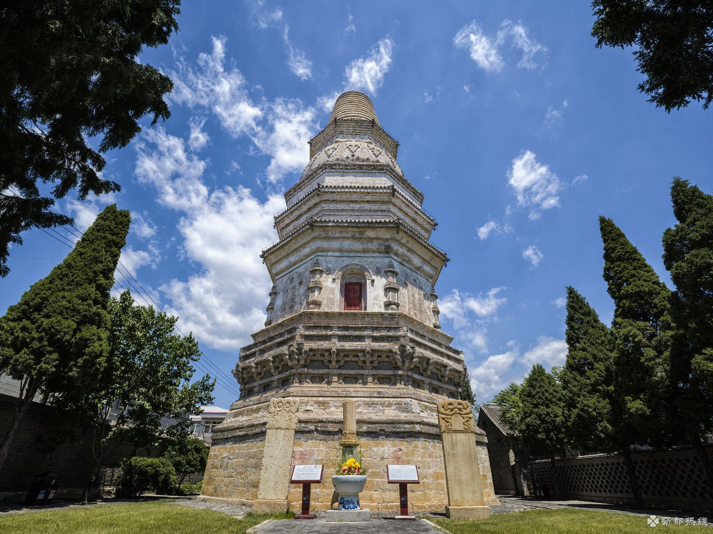
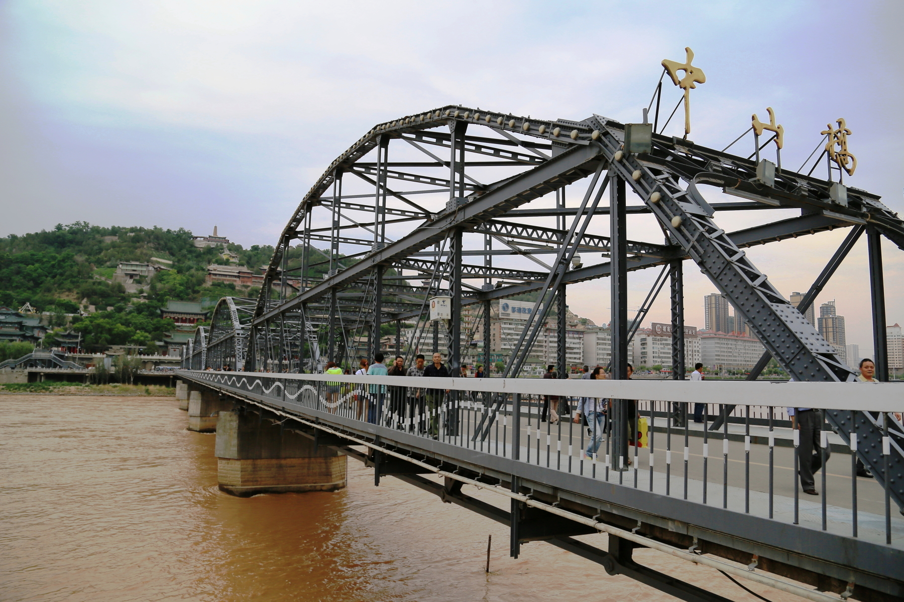
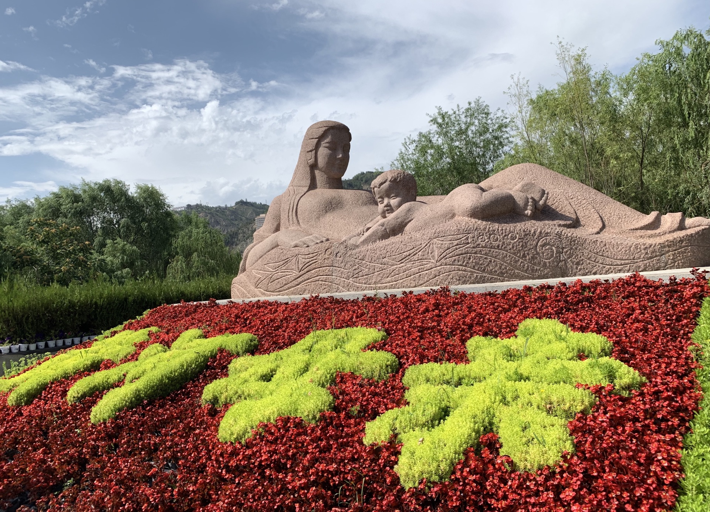
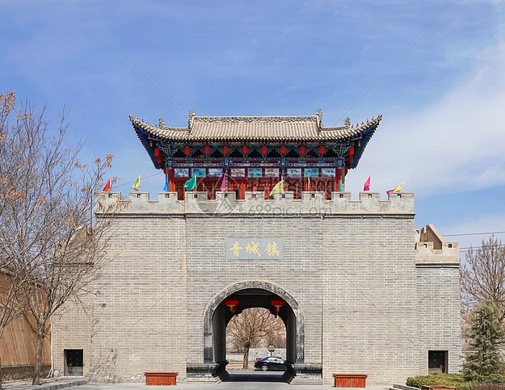
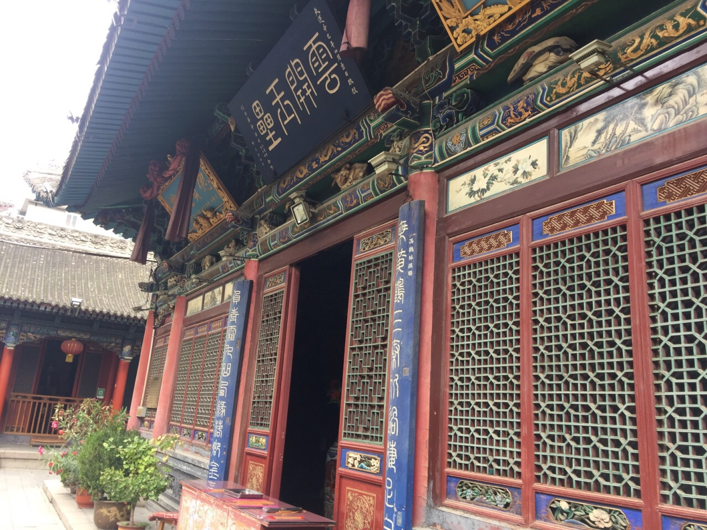

黄河水穿城而过，
黄河铁桥历经百年。
白塔山上的白塔，千百年风采依旧。
兰州，如一首西北的民谣，
厚重苍凉，却生机勃勃。
兰州~总是在清晨出走；
兰州~是夜晚温暖的醉酒；
兰州~淌不完的黄河水向东流；
兰州~路的尽头是海的入口。
部分特色美食
| 序号 | 美食名称 | 美食介绍 |
| 1 | 牛肉面 | “汤镜者清，肉烂者香，面细者精”，美誉“中华第一面”。 |
| 2 | 手抓羊肉 | 肉味鲜美，不腻不膻、色香俱全，可热吃、冷吃和煎吃。 |
| 3 | 酿皮 | 色泽鲜艳、晶莹透亮，切成长条状，柔韧爽口，味美价廉。 |
| 4 | 百合 | 肉质肥厚、风味甘甜、营养丰富，有“兰州百合甲天下”之称。 |

牛肉面
手抓羊肉

酿皮
百合
名胜古迹

因山头的白塔寺而得名，集精巧的建筑结构和雕刻艺术于一身，于山顶可俯瞰兰州市容。
白塔山公园

是黄河上修建最早和唯一保存至今的近现代钢架梁桥，集使用、历史和文物价值于一身，意义重大。
中山桥

黄河母亲雕塑具有着很高的艺术价值，且曾在全国首届城市雕塑方案评比中荣获优秀奖。
黄河母亲雕塑

主要是古建筑和古民居群，国家4A级旅游景区，享有“风雅青城，仁义之乡”的美誉。
青城古镇

古代兰州三观之一，殿堂建筑雄伟香火旺盛，道教文化气氛浓厚，在当地可谓独具风貌。
白云观